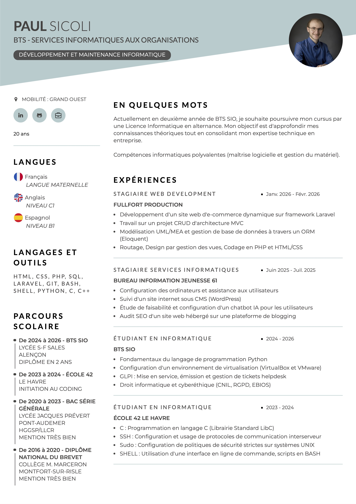

Chronologie
• < (2020-2023) MODDING/CRÉATION D'ADDONS
Premiers pas dans le monde du Coding avec la création et la publication sur la plateforme Steam de contenus additionnels pour les jeux-vidéo (mods)
- Gestion de versions et maintenance du code
- Documentation et mise à jour des changelogs
- Feedback utilisateur & déploiement de patchs correctifs
- Notions sur Blender, Unreal Engine et langage de programmation LUA
• < (2023-2024) ÉTUDES EN INFORMATIQUE : ÉCOLE 42 LE HAVRE
Réusite de la "Piscine" et intégration de l'École 42 du Havre pour une année intensive d'initiation au Coding
- C: Programmation en langage C (Librairie Standard LibC)
- SSH: Configuration et usage de protocoles de communication interserveur
- SUDO/UFW: Configuration de politiques de sécurité strictes sur systèmes UNIX
- SHELL: Utilisation d'une interface en ligne de commande, scripts en BASH
- PROJETS:
‣ C \ libft \ Reproduction de l'intégralité de la libc
‣ C \ ft_printf \ Reproduction de la fonction C printf
‣ C \ minitalk \ Protocole de communication par signaux UNIX
• < (2024-2026) ÉTUDES EN INFORMATIQUE : BTS SIO SLAM
Professionnalisation de mon apprentissage en rejoignant une formation dans un cadre académique reconnu
- PROGRAMMATION: Paradigmes de programmation (Fonctionelle et Orientée Objet)
- CODAGE: Fondamentaux du langage de programmation Python & PHP
- VIRTUALISATION: Machines virtuelles sur VirtualBox et VMware
- GLPI: Mise en service, émission et gestion de tickets helpdesk
- DROIT: Droit informatique et cyberéthique (CNIL, RGPD, EBIOS)

Compétences Techniques
Projet Professionnel
Mon parcours a débuté par la création de mods de jeux vidéo, une première immersion ludique qui m'a transmis la passion du développement. J'ai ensuite forgé ma rigueur technique au sein de l'École 42, avant de choisir la voie de la professionnalisation en BTS SIO. Aujourd’hui, face à un marché de l'IT en mutation affichant une baisse de 25% des recrutements en France, je refuse la stagnation. Le relèvement du plafond technique imposé par l'IA exige une expertise accrue ; c'est pourquoi je souhaite poursuivre mes études. Mon objectif est de transformer ces défis sectoriels en opportunités en élevant continuellement mon niveau de compétences.
